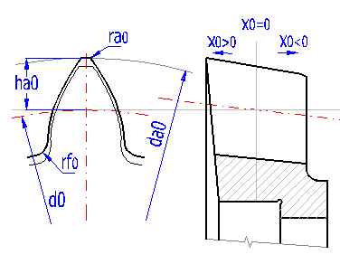
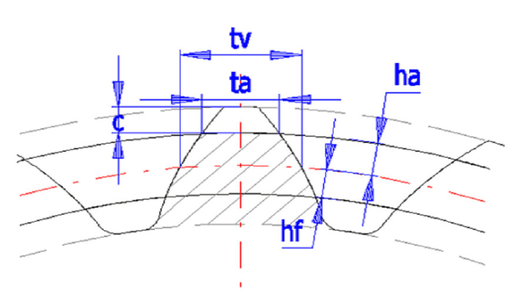
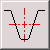
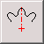
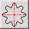

Tiêu chuẩn: DIN 5480, ISO 4156, ANSI B92.1, ANSI B92.2M, CSN 4950 | Chuẩn MITCalc 1.74 (Δ = 0.000000)
| # | Thông Số Kỹ Thuật | Ký Hiệu | Trục (Shaft) | Lỗ (Hub) | Đơn Vị | Thao Tác / Ghi Chú |
|---|---|---|---|---|---|---|
| 1.1 | Hệ đơn vị tính toán | Units | - | Tiêu chuẩn | ||
| 1.2 | Tiêu chuẩn then hoa & Kiểu ăn khớp | Standard | - | 17 Hệ tiêu chuẩn | ||
| 1.3 | Góc ăn khớp danh nghĩa | α | 30.00 |
[°] | Góc sườn răng | |
| 1.4 | Mô-đun tiêu chuẩn (Hệ Mét) | m |
|
10.000 |
[mm] | Dãy 0.5 ÷ 10 |
| 1.5 | Diametral Pitch (Hệ Inch ANSI) | P |
|
2.540 |
[1/in] | ANSI B92.1 |
| 1.6 | Số răng then hoa | z | 20 |
- | Đồng bộ z1 = z2 | |
| 1.7 | Đường kính chia / cơ sở | d / db | 200.0000 |
173.2051 |
[mm] | d = z·m, db = d·cosα |
| 1.8 | Đường kính đỉnh & chân răng Trục | da0 / df0 | [mm] | |||
| 1.9 | Đường kính đỉnh & chân răng Lỗ | Di / Dri | [mm] | Chuẩn DIN/ISO | ||
| 1.10 | Hệ số dịch chỉnh biên dạng răng | x0 / x2 | [m] | Profile shift | ||
| 1.11 | Chiều dày răng trên vòng chia | s | 15.7080 |
15.7080 |
[mm] | π·m/2 + 2x·m·tanα |
| 1.12 | Bề rộng rãnh răng trên vòng chia | e | 15.7080 |
15.7080 |
[mm] | π·m - s |
| 1.13 | Khe hở cạnh răng danh nghĩa (Backlash) | jn | 0.0000 |
[mm] | (e2 - s0)/2 · cosα | |

| # | Thông Số Dụng Cụ Cắt | Ký Hiệu | Trục (Shaft) | Lỗ (Hub) | Đơn Vị | Ghi Chú |
|---|---|---|---|---|---|---|
| 2.1 | Chiều cao đầu răng của dao | ha0* | 0.7500 |
0.7500 |
[m] | Tiêu chuẩn |
| 2.2 | Chiều cao chân răng của dao | hf0* | 0.7500 |
0.7500 |
[m] | Tiêu chuẩn |
| 2.3 | Bán kính lượn đỉnh dao | ra0* | 0.0000 |
0.2000 |
[m] | DIN / ISO |
| 2.4 | Bán kính lượn chân dao | rf0* | 0.0000 |
0.0000 |
[m] | Cung lượn chân |

| # | Thông Số Hình Học Đầy Đủ | Ký Hiệu | Trục Then Hoa (Shaft) | Lỗ Moay-ơ (Hub) | Đơn Vị | Công Thức Giải Tích |
|---|---|---|---|---|---|---|
| 3.1 | Số răng then hoa | z | 20 |
20 |
- | Số răng danh nghĩa |
| 3.2 | Mô-đun pháp tiêu chuẩn | m | 10.0000 |
[mm] | Mô-đun hình học | |
| 3.3 | Bước răng trên vòng chia | p | 31.4159 |
[mm] | p = π·m | |
| 3.4 | Bước răng cơ sở | pb | 27.2070 |
[mm] | pb = p·cosα | |
| 3.5 | Góc ăn khớp danh nghĩa | α | 30.00 |
[°] | Góc profin gốc | |
| 3.6 | Đường kính đỉnh răng | da / Di | 210.0000 |
191.1454 |
[mm] | Đường kính ngoài |
| 3.7 | Đường kính chia danh nghĩa | d | 200.0000 |
200.0000 |
[mm] | d = z·m |
| 3.8 | Đường kính vòng cơ sở | db | 173.2051 |
173.2051 |
[mm] | db = d·cosα |
| 3.9 | Đường kính chân răng (đáy rãnh) | df / Dri | 185.0000 |
215.0000 |
[mm] | Đường kính trong |
| 3.10 | Chiều cao đỉnh răng | ha | 5.0000 |
4.4273 |
[mm] | |da - d| / 2 |
| 3.11 | Chiều cao chân răng | hf | 7.5000 |
7.5000 |
[mm] | |d - df| / 2 |
| 3.12 | Chiều dày răng trên đỉnh | sa | 10.0167 |
10.4840 |
[mm] | Bề rộng đỉnh răng |
| 3.13 | Chiều dày răng trên vòng chia | s | 15.7080 |
15.7080 |
[mm] | Chiều dày danh nghĩa |
| 3.14 | Chiều dày răng ở chân răng | sf | 24.4739 |
27.1119 |
[mm] | Chiều dày chân răng |
| 3.15 | Khe hở đỉnh răng hướng tâm | c | 2.5000 |
3.0727 |
[mm] | Khe hở lắp ghép |
| 3.16 | Hệ số khe hở đỉnh tương đối | c* | 0.2500 |
0.3073 |
[m] | c / m |
| # | Thông Số Đo Kiểm Tra | Ký Hiệu | Trục Then Hoa (Shaft) | Lỗ Moay-ơ (Hub) | Đơn Vị | Phương Pháp Kiểm Tra |
|---|---|---|---|---|---|---|
| 4.1 | Số răng đo pháp tuyến chung | k | 4 |
3 |
Răng | Số răng kẹp thước |
| 4.2 | Chiều dài pháp tuyến chung | W | 104.5345 |
104.5345 |
[mm] | Thước đo pháp tuyến |
| 4.3 | Đường kính con lăn / đũa / bi đo | dp | [mm] | dp ≈ 1.75·m | ||
| 4.4 | Kích thước đo qua hai viên bi / con lăn | M | 224.9091 |
174.1319 |
[mm] | Đo qua đũa/bi chính xác |
| # | Thông Số Đo Thực Tế | Ký Hiệu | Trục Đo (Shaft) | Lỗ Đo (Hub) | Đơn Vị | Thao Tác |
|---|---|---|---|---|---|---|
| 5.1 | Số răng đếm được | zx | - | Đếm số răng | ||
| 5.2 | Đường kính đỉnh răng đo được | dax | [mm] | Đo bằng panme/thước kẹp | ||
| 5.3 | Khoảng cách giữa các mép răng | ux | [mm] | Bù trừ độ cong | ||
| 5.4 | Đường kính đỉnh răng hiệu chỉnh | daxx | 20.0000 |
20.0000 |
[mm] | dax + u2/(4·dax) |
| 5.5 | Mô-đun răng tính toán được | m | 0.769 |
0.909 |
[mm] |
|



* Định dạng file DXF chuẩn AC1009 tương thích 100% không lỗi với AutoCAD 2000 - 2026, SolidWorks, Autodesk Inventor, Mastercam, LibreCAD. Xuất 100% Offline qua Blob.